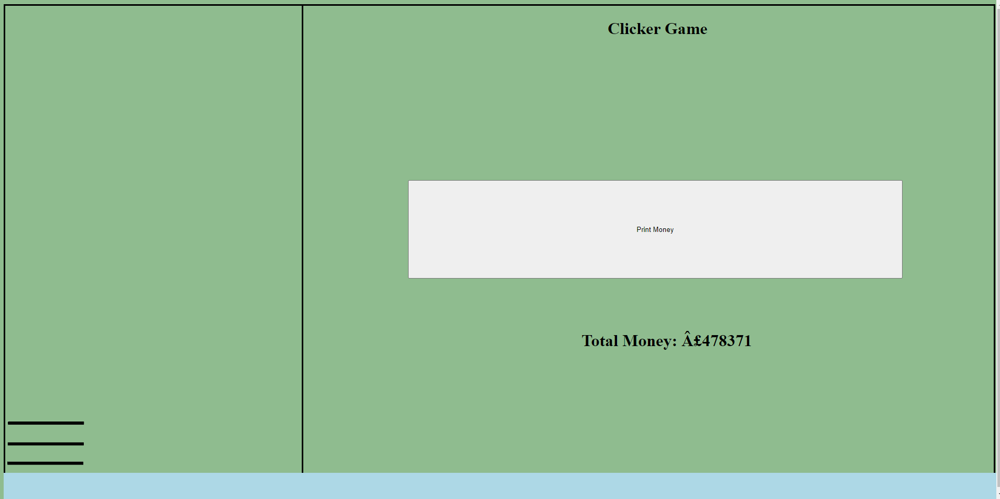

History of Clicker Games
Clicker games which are sometime referred to as incremental games are a type of game where the player completes a simple objective and in return gets a reward, this reward
usually allows the player to "increase" their ability to get more rewards or make the action easier to achieve. The first clicker game is widely regarded as a game called "Progress Quest" this game featured
lots of common features which are still seen today in these types of games, the most popular clicker game is Cookie Clicker.Other notable games include Clicker Heroes which has even been released as a whole
game.
The clicker genre continues to progress and expand as more ideas are put into games which eventually spread to other games, this means that even if you get bored of one idle game there is always another one out there
which brings a breath of fresh air into the genre.
Overall, the genre is incredibly strong and you have large fanbases of players who
are willing to dedicate hours upon hours of time towards progress in your game.
